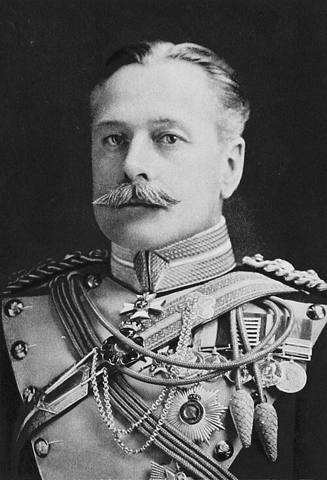
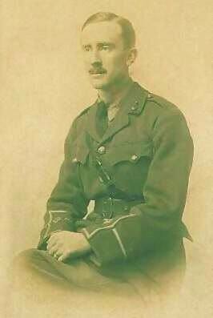
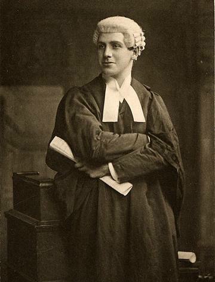

Generaals, soldaten, dichters en een filmer, van beide kanten. Alle foto’s komen van Wikimedia Commons en zijn vrij van rechten (publiek domein of CC0); de bron staat bij elke foto.
Dertien verhalen
Douglas Haig
Opperbevelhebber van het Britse leger in Frankrijk, 1861–1928

Haig in 1917Foto: Elliott & Fry, published 1917 · Public domain · Wikimedia Commons
Haig nam in december 1915 het bevel over het Britse leger in Frankrijk over en had de leiding over de Slag aan de Somme. Hij geloofde dat het Duitse leger door aanhoudende druk uitgeput zou raken. Om de enorme verliezen kreeg hij na de oorlog de bijnaam ‘Butcher Haig’; andere historici wijzen erop dat zijn leger in 1918 de Duitsers versloeg. ⚖️ Omstreden Na de oorlog zette hij zich in voor oud-strijders; het Haig Fund verkoopt nog steeds de rode klaprozen. [1][17]
Rawlinson in 1916Foto: Bain, 1916 · Public domain · Wikimedia Commons
Rawlinson schreef het aanvalsplan voor 1 juli 1916. Hij wilde eigenlijk stap voor stap oprukken (‘bite and hold’), terwijl Haig op een doorbraak hoopte. Daarna leidde hij de nachtaanval van 14 juli. In augustus 1918 voerde hij het bevel bij Amiens, de grote overwinning van 8 augustus. [2]
Foch, 1914–1918Foto: Nationaal Archief, between 1914 and 1918 · CC0 · Wikimedia Commons
In 1916 voerde Foch het bevel over de Franse legers in het noorden, die aan de Somme ten zuiden van de Britten aanvielen. Na de Duitse doorbraak van maart 1918 kreeg hij in Doullens de leiding over alle geallieerde legers aan het westfront. Hij plande de offensieven van de Honderd Dagen en tekende op 11 november 1918 de wapenstilstand. [3]
Von Below verdedigde in 1916 het Duitse front aan de Somme. Hij gaf bevel dat geen grond mocht worden opgegeven en dat elk verloren stuk direct moest worden heroverd. Daardoor leden ook de Duitsers zeer zware verliezen. Hij stierf in november 1918. [4]
Tweede luitenant en verbindingsofficier, 1892–1973

Tolkien in uniform, 1916Foto: onbekend, 1916 · Public domain · Wikimedia Commons
De latere schrijver van ‘The Lord of the Rings’ kwam in juli 1916 aan de Somme aan bij de Lancashire Fusiliers. Hij was verbindingsofficier en vocht onder meer bij Thiepval. Eind oktober 1916 werd hij ziek van loopgraafkoorts en naar Engeland teruggestuurd. Twee van zijn beste vrienden sneuvelden aan de Somme. Velen zien in de dodenmoerassen en verwoeste landschappen in zijn boeken een echo van het slagveld. [5]
Sassoon in 1915Foto: George Charles Beresford, 1915-05 · Public domain · Wikimedia Commons
Sassoon diende bij de Royal Welch Fusiliers en vocht in juli 1916 bij Mametz Wood en Fricourt. Hij stond bekend om zijn moed (‘Mad Jack’) en kreeg het Military Cross. In 1917 protesteerde hij publiek tegen het voortzetten van de oorlog. Zijn gedichten, zoals ‘The General’, zijn bitter over de leiding. [6]
Graves in 1929Foto: onbekend, 1929 · Public domain · Wikimedia Commons
Graves diende in hetzelfde regiment als Sassoon. Bij High Wood raakte hij op 20 juli 1916 zo zwaar gewond dat zijn familie te horen kreeg dat hij gesneuveld was. Hij overleefde. Zijn boek ‘Good-Bye to All That’ (1929) is een van de bekendste Britse oorlogsherinneringen. [7]
Chavasse, ≈ 1914–1916Foto: onbekend, between circa 1914 and circa 1 · Public domain · Wikimedia Commons
Chavasse was arts bij een bataljon uit Liverpool. Op 9 augustus 1916 haalde hij bij Guillemont urenlang gewonden uit het niemandsland, zelf gewond. Daarvoor kreeg hij het Victoria Cross. In 1917 bij Ieper deed hij hetzelfde en sneuvelde. Hij is een van de maar drie mannen met twee Victoria Crosses. [8]
Newfoundland was in 1916 nog geen deel van Canada. Het eiland stuurde een eigen regiment vrijwilligers. Op 1 juli 1916 om ≈ 9:15 uur viel het aan bij Beaumont-Hamel. Bijna iedereen werd binnen een half uur gedood of gewond; de volgende ochtend meldden zich maar 68 man (aantallen verschillen per bron). In Newfoundland is 1 juli nog altijd een dag van rouw. Het herdenkingspark met de bronzen kariboe is het beste bewaarde stuk slagveld aan de Somme. [14][15][16]
Luitenant, dichter en oud-parlementslid, 1880–1916

Tom KettleFoto: onbekend, No later than 1917 · Public domain · Wikimedia Commons
Kettle was een Iers nationalist die toch dienst nam in het Britse leger, ‘voor de vrijheid van kleine naties’ zoals België. Op 9 september 1916 sneuvelde hij bij Ginchy met de 16e (Irish) Divisie. Kort daarvoor schreef hij voor zijn dochtertje het gedicht ‘To My Daughter Betty, the Gift of God’. [11]
Monash was ingenieur en reservist, de zoon van Joodse immigranten. In 1918 werd hij bevelhebber van het Australische korps. Hij plande zijn aanvallen tot in detail, met tanks, vliegtuigen en artillerie samen, zoals bij Le Hamel (4 juli 1918) en Amiens (8 augustus). Het museum bij Villers-Bretonneux draagt zijn naam. [9]
Von Richthofen, ≈ 1917Foto: C. J. von Dühren, circa 1917 · Public domain · Wikimedia Commons
Met 80 overwinningen was hij de bekendste piloot van de oorlog. Op 21 april 1918 werd hij boven de Sommevallei neergeschoten en stierf. Wie hem raakte, is omstreden: de Canadese piloot Roy Brown, of (volgens de meeste onderzoekers) een Australische mitrailleur op de grond. ⚖️ Omstreden De Australiërs begroeven hem met militaire eer. [10]
MalinsFoto: onbekend, between 1886 and 1940 · Public domain · Wikimedia Commons
Malins filmde op 1 juli 1916 de ontploffing van de mijn onder Hawthorn Ridge. Met John McDowell maakte hij de film ‘The Battle of the Somme’, die in augustus 1916 in Britse bioscopen draaide; volgens schattingen zagen ≈ 20 miljoen mensen hem in een paar weken. Een paar scènes zijn nagespeeld achter het front. ⚖️ Omstreden[12][13]